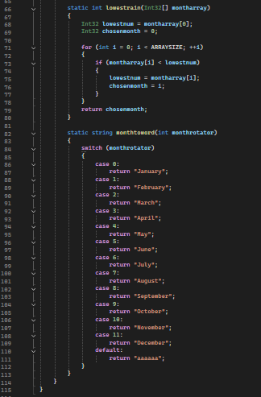

Rainfall Calculation Project
Description
This programming project prompts users to input rainfall data for each month of the year. The application stores these inputs in an array and performs statistical analysis to determine total annual rainfall, monthly averages, and identifies the specific months with the highest and lowest precipitation levels.
Technologies Used
Coded in C# using the .NET Framework. The project was developed in Visual Studio Code and executes within a terminal environment.
Code Snippets
Input Validation & Array Storage
for (int i = 0; i < ARRAYSIZE; i++)
{
Console.WriteLine("What was the total rainfall in mm during the month of " + months[i] + ".");
while (!int.TryParse(Console.ReadLine(), out rainfallval) || rainfallval < 0)
{
Console.WriteLine("Please enter a whole, positive number");
}
montharray[i] = rainfallval;
Console.Clear();
}
Statistics Calculation
static int calctotalrain(Int32[] montharray)
{
return montharray.Sum();
}
static int highestrain(Int32[] montharray)
{
Int32 highestnum = montharray[0];
Int32 chosenmonth = 0;
for (int i = 0; i < ARRAYSIZE; ++i)
{
if (montharray[i] > highestnum)
{
highestnum = montharray[i];
chosenmonth = i;
}
}
return chosenmonth;
}
Screenshot

What I Learned
This project solidified my understanding of fundamental C# features, including arrays, loops, and functions. It provided practical experience in combining these features to build a functional data analysis tool, improving my critical thinking regarding input validation and data processing logic.